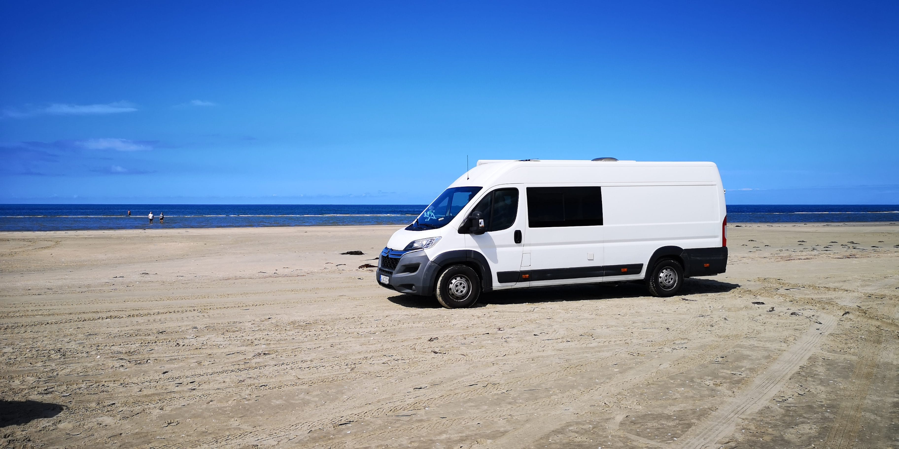

<div class="main-container">
        
    
    <div class="text-container">
        <h5>Who I Am</h5>
        <div class="text-box" style="opacity: 0.1">
            <h2>About me</h2>
            <p>Hi, I am a german speaking Frontend Developer based between Hamburg and Schwerin. Motivated by the
                limitless opportunities within IT, I am excited about crafting visually captivating and intuitive
                websites and applications.</p>

            <div class="bullet-points">
                
                <p style="opacity: 0.8">Flexible in terms of working environments, I can work effectively both on-site in eastern Schleswig-Holstein and remotely.</p>
            </div>
            <div class="bullet-points">
                
                <p style="opacity: 0.8">I am open-minded and always looking for personal challenges to constantly improve my knowledge and skills.</p>
            </div>
            <div class="bullet-points">
                
                <p style="opacity: 0.8">In my profession, programmin isn't just about writing code; it's a creative form of problem-solving. I take prid in my ability to distill complex technical challenges into simple, user-friendly solutions. This way, I help you achieve your goals and bring your visions to life.</p>
            </div>

        </div>
    </div>
</div>